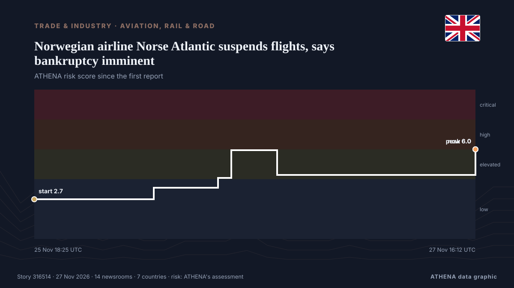

Trade, Industry & Infrastructure
SponsoredPresented by  Cybernetics and Artificial Intelligence Lab Welcome to the Cybernetics and Artificial Intelligence Laboratory, established at the Department of Business Administration of the National and Kapodistrian University of Athens. The lab is headed by Professor Dimitrios Thomakos. The lab aims to do research that can be published in top venues. Our research uses tools and methods of Artificial Intelligence, and lies in the following areas: - Forecasting - Decision making - Cyber security - Finance We are always looking forward to collaborating with exceptional students!
Cybernetics and Artificial Intelligence Lab Welcome to the Cybernetics and Artificial Intelligence Laboratory, established at the Department of Business Administration of the National and Kapodistrian University of Athens. The lab is headed by Professor Dimitrios Thomakos. The lab aims to do research that can be published in top venues. Our research uses tools and methods of Artificial Intelligence, and lies in the following areas: - Forecasting - Decision making - Cyber security - Finance We are always looking forward to collaborating with exceptional students!

Aviation, rail & roadNorwegian airline Norse Atlantic suspends flights, says bankruptcy imminent
Norwegian low-cost carrier Norse Atlantic, hit by surging jet fuel prices due to the war against Iran, said Thursday it was teetering on the verge of bankruptcy as it cancelled all flights for the… from The Local Norway
| 14 Nov | 77 |
|---|---|
| 15 Nov | 66 |
| 16 Nov | 122 |
| 17 Nov | 97 |
| 18 Nov | 102 |
| 19 Nov | 73 |
| 20 Nov | 99 |
| 21 Nov | 34 |
| 22 Nov | 61 |
| 23 Nov | 108 |
| 24 Nov | 90 |
| 25 Nov | 87 |
| 26 Nov | 76 |
| 27 Nov | 20 |
Iran says 2 oil tankers hit naval mines, catch fire near Oman’s Khasab port
Iran’s Islamic Revolutionary Guard Corps (IRGC) Navy said on Thursday that two oil tankers hit naval mines and caught fire north of Oman’s Khasab port while attempting to “secretly” cross the Strait… from Middle East Monitor
Thanksgiving storm knocks out power, disrupts flights on US East Coast
More than 836,000 US utility customers had no power. from The Straits Times
European Parliament seeks EU action over Turkey-Libya maritime deal
The European Parliament on Thursday asked EU governments to consider targeted sanctions on people or organizations that violate an EU member’s maritime rights by implementing a 2019 agreement between… from Turkish Minute
Tata Steel shares rise 1%, APL Apollo falls 9% as brokerages turn cautious on ₹28,000 cr deal
Brokerages largely negative on APL Apollo, mixed on Tata Steel. from The Hindu BusinessLine
Iran rapidly builds underground complex near nuclear sites – US institute
Iran is rapidly constructing a fortified underground complex between two of its main nuclear sites that could house weapons systems or infrastructure linked to its nuclear program, a Washington-based… from Iran International (English)
US unveils tariffs on EU, China and others over ‘unfair’ trade
The United States has proposed tariffs of up to 20% on the European Union, China, and several other countries, citing unfair economic practices following a lengthy investigation. from Arab News
EU rejects new US tariffs targeting industrial overcapacity
The European Union has rejected the rationale behind new tariffs proposed by the United States on several trading partners, to fight what Washington describes as excess industrial capacity, and said… from RFI English
Body of missing Bulgarian man found; employer confessed murder
A tragic end for the 24-year-old Bulgarian national who went missing in rural area by the city of Drama, northern Greece, since November 21, 2026. from Keep Talking Greece
Déjà vu in Miami as FedEx MD-11 freighter overshoots runway
Call it runway redux at Miami airport on Saturday when a FedEx cargo jet ran off the runway into a grassy field. from FreightWaves
EU officially limits imports of Chinese hybrid vehicles
Brussels and Beijing agreed to limit exports of Chinese plug-in hybrids and other hybrid vehicles to the 27-nation bloc as part of a deal to avoid a trade war. from Free Malaysia Today
Japan, China trade accusations over ships near disputed islands
Japan and China have exchanged accusations over alleged intrusions by ships into waters near the disputed Senkaku/Diaoyu Islands, escalating longstanding diplomatic tensions. from Arab News
Russians attack Bila Tserkva, killing one person
Russian forces struck Bila Tserkva overnight, damaging an Epicentr shopping centre, a Nova Poshta delivery service branch and other businesses. from Ukrainska Pravda (English)
Thanksgiving has a bumpy history
The history of the American Thanksgiving holiday has evolved from early colonial feasts and Revolutionary War era proclamations to modern debates over its religious nature and official date. from The Hill
Flydubai To Resume Flights To Israel On December 3
The airline's flights to Israel had been suspended after one of its aircraft, travelling from Dubai to Tel Aviv, was forced to make an emergency landing in Saudi Arabia in September. from NDTV World
Belgium: Farmers and tractors descend on Brussels to defend EU subsidies
Around 200 representatives of European farming unions marched through Brussels, Belgium, on Thursday 26 November 2026 to protest against proposed cuts to the European Union's Common Agricultural… from Euronews English
Russian forces strike factory in Khmelnytskyi region
In the Khmelnytskyi district, a fire broke out on the premises of one of the enterprises as a result of a Russian attack. from Ukrinform (English)
'No structural excess capacity in any sector': India pushes back against US tariff allegations
India said on Wednesday that it remained committed to concluding a bilateral trade agreement with the US at the earliest. from Business Today India
Flydubai to resume Dubai–Tel Aviv flights from December 3 after two-month suspension
Flydubai will resume flights between Dubai and Tel Aviv on December 3 following a two-month suspension and approvals from the relevant authorities. from Arabian Business
Trump’s new tariffs aim to pry global trade from China’s grip
The United States’ latest tariff hikes are set to inflame trade tension with Beijing, making it… from BusinessWorld
Explained: How Trump’s proposed tariffs for India compare with rival nations
The United States has proposed a 25 percent tariff on Indian imports to address what it describes as excess industrial capacity. from The Kathmandu Post
Vietnam seeks talks to lower proposed US tariffs under Section 301 investigation
Vietnam will pursue multiple channels of engagement and negotiations with the U.S. to reduce an additional tariff of up to 35 percent proposed by the Office of the U.S. from Tuoi Tre News
Iran prepares oil tanker convoy to break US naval blockade, threatens Gulf facilities - report
Iran is reportedly preparing a convoy of more than 14 oil tankers to challenge the US naval blockade, as media outlets close to the IRGC threaten attacks on Gulf energy infrastructure. from The Jerusalem Post
US Proposes 25% Tariff On India. It Could Come Down With Trade Deal
These new tariffs would not be added to existing ones aimed at combating forced labour or certain sector-specific tariffs, a senior US official said. from NDTV
US proposes surprise new tariffs on Brazil imports, including 10% duty on aircraft
Brazil’s government said Washington’s proposal was unacceptable and aimed to pressure Brazil into changing its regulatory measures. from The Straits Times
Malaysia benefits immensely as a trading nation by engaging with world leaders, says Anwar
KUALA LUMPUR, Nov 25 — Prime Minister Datuk Seri Anwar Ibrahim said Malaysia has benefited immensely as a trading nation... from Malay Mail
US announces fresh tariffs on China and several other trading partners
WASHINGTON DC: The United States has unveiled a new round of import tariffs targeting several countries and trading partners as President Donald Trump continues to advance his signature trade policy. from Khabarhub English
Afghan Fresh Fruit Exports Fall 88% as Trade Through Central Asia Grows
Afghanistan shipped $210 million worth of goods through Central Asia from April through September 2026, more than double the value. from The Times of Central Asia
CJP’s Saurav Das moves Delhi HC after being stopped from travelling to UK
The Ministry of External Affairs said the passport office had asked Das to respond to a notice over alleged discrepancies and not use the document until then. from Scroll.in
Everllence and COSCO SHIPPING Advance Fleet Digitalisation
On November 23, 2026, Everllence signed a Memorandum of Understanding (MoU) with China COSCO SHIPPING Corporation Limited (COSCO SHIPPING). from The Maritime Executive
APM Terminals Maasvlakte II and Port of Rotterdam Authority take next step in terminal development
APM Terminals Maasvlakte II and the Port of Rotterdam Authority are moving forward in terminal’s development with preparations for a. from Cyprus Shipping News
Maersk Orders 12 Ultra-Large Dual-Fuel Container Ships
Maersk has ordered 12 ultra-large container ships scheduled for delivery in 2030 and 2031, which will become the biggest vessels in its fleet, a company spokesperson said on Tuesday.The vessels, each… from MarineLink
IRGC Reports Three Tankers Exploded in Hormuz After Hitting Mines
Iran's Revolutionary Guards navy reported that three tankers exploded and caught fire in the Strait of Hormuz after striking naval mines ... from IranWire
Iran says it is not concerned about US naval blockade
Dubai: Iran is not concerned about the US naval blockade as cargo clearance through its non-southern borders has increased and reserves of strategic goods remain strong, First Vice President Mohammad… from Deccan Herald
Explosion occurs on LNG carrier in Strait of Hormuz
Ahmad Hayat-Moghaddam, Vice Chairman of the Iranian Parliament’s National Security and Foreign Policy Committee, announced on Tuesday, N ... from IranWire